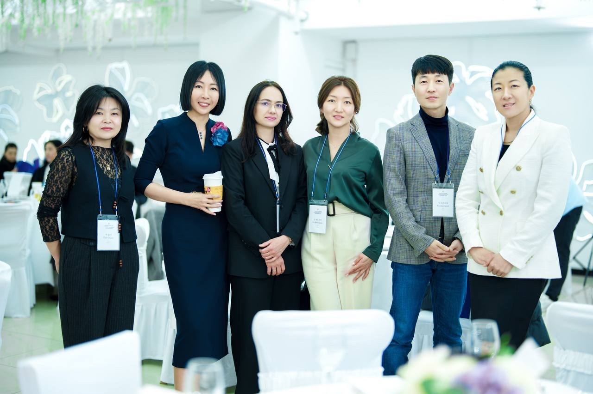
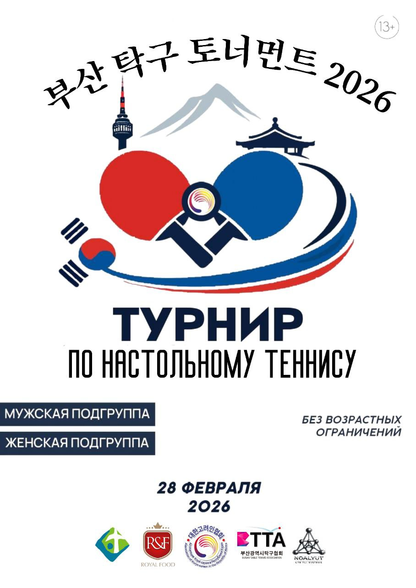
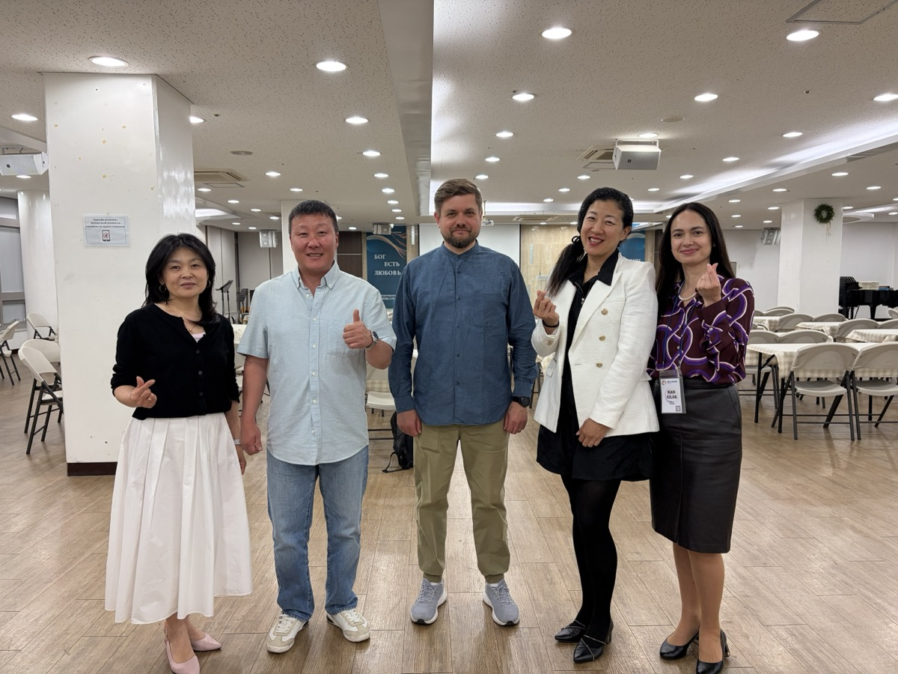
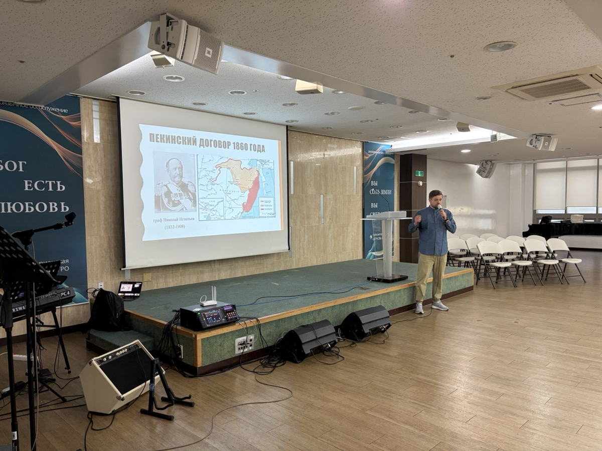
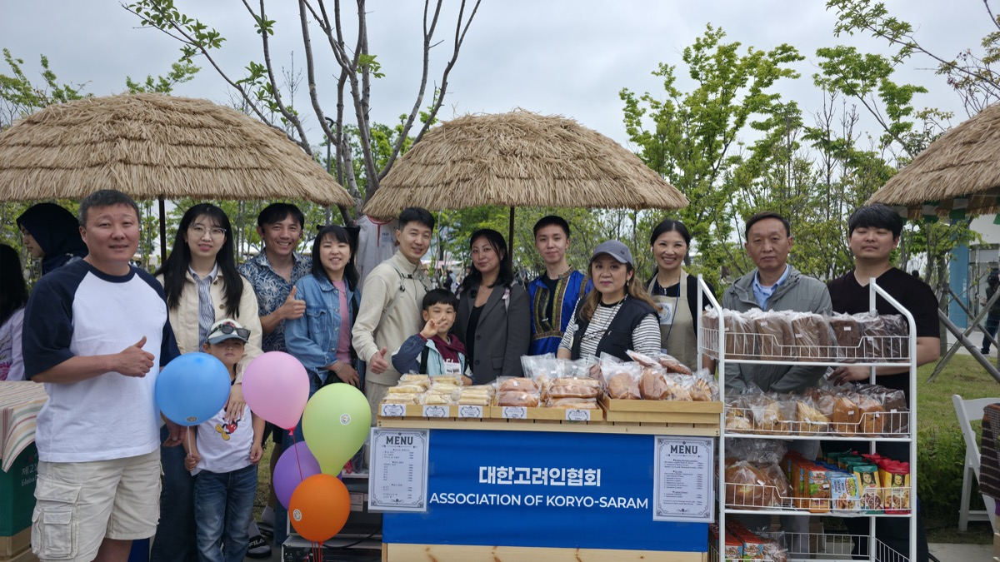
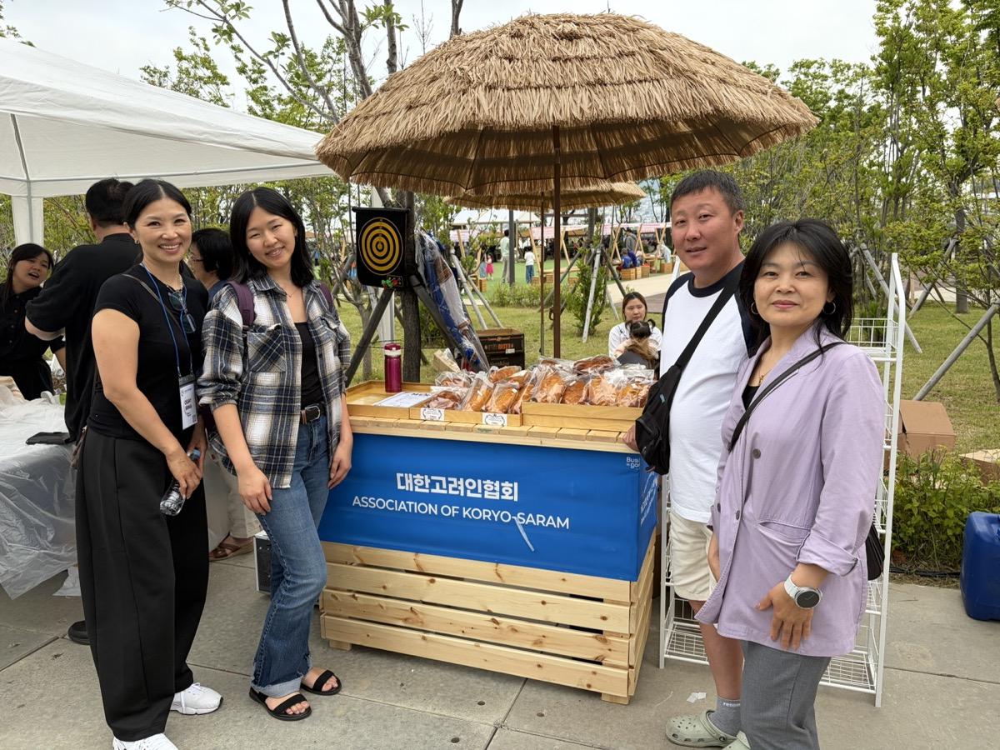
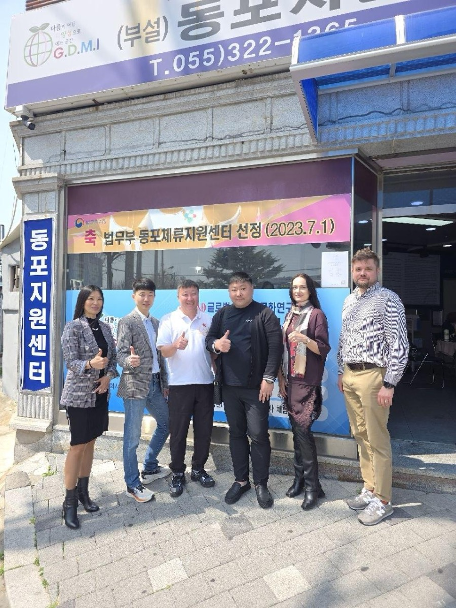
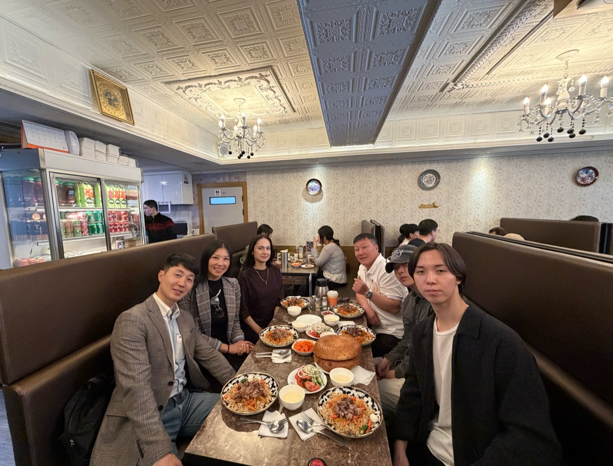

Информационная сессия для корё-сарам и всех заинтересованных
Ассоциация Корё-сарам в Республике Корея — официальная организация, зарегистрированная в МИД РК (12.12.2018, рег. №195 от 12.08.2020), представляющая интересы корейцев постсоветского пространства.
⚠️ Цифры примерные, уточнить у головного офиса / регионального представителя
Миссия: Защита прав диаспоры, содействие социальной интеграции, сохранение культурной идентичности корё-сарам в РК.
Три опоры: Идентичность · Рост · Взаимодействие
Главный аргумент — из ролика президента АКРК:
Агрегация голосов и проблем сообщества
Артикуляция интересов государству и обществу
Медиация между общиной и институтами
15 000 000 ₩ — признание работы АКРК на государственном уровне
Открытие памятника корё-сарам — символ признания вклада диаспоры
«Армия независимости: неоконченная война» — спонсирование и перевод на русский
Видеокурсы по программе интеграции — бесплатный ресурс для сообщества
10 клубов по интересам · 25 мероприятий за год
Поддержка детей и семей корё-сарам в корейских школах
Исторические лагеря, экскурсии, молодёжные форумы, выставка Хегая Мирона
| Действительный член | Обычный член | |
|---|---|---|
| Взнос | 10 000 ₩ / мес | По желанию, без ежемесячных |
| Право голоса | Да | Нет |
| Право быть избранным | Да | Нет |
| Доступ к программам | Полный | Да |
Предприниматели, профессионалы, единомышленники
Турниры, лекции, экскурсии, фестивали — со скидками для членов
1365 — учитываются при ПМЖ и гражданстве
Грант «На крыльях бизнеса» и реальный кейс Ирины Ким
Право, миграция, медицина, образование — информационная навигация
Люди с разным бэкграундом, навыками и талантами
В ассоциации — очень разные люди. Каждый может сделать вклад, заявить о своём голосе, высказать проблему. Вместе — собрать и эскалировать на уровень государства. Один это не сделает. А команда — может.
Shorts: «А что мне даст вступление в АКРК?» — о нетворкинге
Shorts: «Почему я вступила в АКРК» — личная история
Дополнительные возможности: программы со скидками для членов, доступ к важной информации и информированность о событиях сообщества.
Участвуя в подготовке и организации проектов и мероприятий, появляется возможность реализовать свои навыки и таланты вместе с командой — сделать проект для общества, для людей. Результат: впечатления, эмоции и чувство удовлетворения от проделанной работы.
Взносы — не плата кому-то, а вклад в общий устойчивый ресурс сообщества
Три базовых вектора — каркас всей деятельности организации:
Восстановление прав, правовой статус корё-сарам, работа с Парламентом, визовые вопросы (F4/F1/F3), регистрация наследия в ЮНЕСКО «Память мира»
Правовая навигация, защита трудовых прав, модель «семья — школа — сообщество», билингвальное образование, профессиональная переподготовка
Образ корё-сарам как ресурса развития страны, деловые связи со странами СНГ, предпринимательство, участие в демографических программах
Региональное представительство АКРК в Пусане и южном регионе. Представитель в Совете директоров — Хан Владимир.
За 1-е полугодие 2026 проведено 3 крупных события + запущены медиа-каналы и инструменты.

🏛 21.02.2026 · АнсанКоманда Пусана приняла участие в V отчётно-выборном собрании АКРК в Ансане — ощущение масштаба, понимание стратегии, заряд для развития на юге.

🏓 28.02.2026
📚 Групповое фото
🏛 Музей
🌍 Команда
🌍 Стенд
🚀 Кимхэ
🚀 КимхэЗапущены Instagram, Facebook, YouTube каналы АКРК Пусан (@akrk_south)
Онлайн-инструмент подготовки к экзамену — бесплатно для сообщества
Структурирована и актуализирована
Выявлены ключевые боли: языковой барьер, адаптация, дети
Определены 7 рабочих направлений на 2026 год
Бесплатные разговорные занятия каждую среду 10:00, Хёнде. Индивидуальные уроки
Сегодня к нам по видеосвязи подключается президент АКРК Тен Жанна Владимировна, чтобы лично поприветствовать участников сессии и новых членов организации.
5–10 минут в начале. Цель — расслабиться и познакомиться до контента. Многие пришли впервые.
Каждый называет три факта, остальные угадывают ложь
Карточки: «кто живёт в Пусане меньше года» и т.д.
Имя, откуда, один факт о себе — по кругу
После квиза разделимся на мини-группы для обсуждения. Цель — не просто поговорить, а вместе подумать: что бы вы хотели видеть от АКРК, какие проекты нужны сообществу, какие у вас есть идеи.
Обсуждение в группах по 4-6 человек, фиксация идей
Каждая группа делится main мыслями с залом
Формат: 15-20 мин обсуждение + 10 мин презентация. Далее — процесс вступления, Q&A и свободное общение.
Членом может стать любой этнический кореец из постсоветских стран, проживающий в РК. Без членства можно участвовать как волонтёр или спонсор.
koryosaram.org
федеральный @akrk2018 · юг @akrk_south
@akrk_south
koresaraminkorea@gmail.com